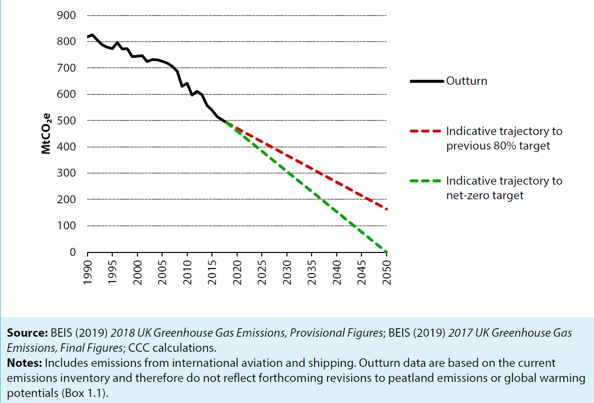

In this chapter we will review the performance in reducing emissions across the
economy as a whole, focusing on changes in annual greenhouse gas emissions since
1990, in the last five year and from 2017 – 2018
Article Title
Introduction to reporting progress towards carbon budgets
In May 2019, in response to a request by the Governments, the committee advised
that now is the time to set a net-zero target for the UK, going beyond the existing
2050 target. The path to achieving net-zero emissions by 2050 will necessarily entail
a steeper reduction in emissions over the intervening three decades. One average,
emissions will need to fall by 15 MtCO2e every year, equivalent to 3% of emissions
in 2018.

Figure 1 Indicative rates of decarbonisation required to achieve 80% and 100% reductions by 2050
Graph To Show Decarbonisation
Figure 1 Indicative rates of decarbonisation required to achieve 80% and 100% reductions by 2050
Article Title
The Impact of Policies on Emissions Reduction Over the Second Carbon Budget
Overall our policy indicators for 2017, suggest there was limited progress in most areas outside of the EU ETS.
Transport :
None of the current targets or regulations have been met for this catagory.
Industry :
The emmsisions target for this sector has been met, however this is mostly due to a smaller growth in the sector than expected in 2008.
Buildings :
Most indicators have not been met for this sector and insulation rates have fallen.
Power :
Lots of progress has been made in decarbonising electricity.
Agriculture, Land Use and Forestry :
None of the indicators have been met, possibly reflecting a lack of government policy in this area.
Waste :
Good progress was made in reducing waste emissions
F-Gases :
The F-Gas indicator was not met, this is most likely due to the policy only coming into effect in 2015.
Assessment of Non-Policy Factors Underpinning the Seconds Carbon Budget Surplus
The key message from the study is that had the EU ETS cap and economic conditions turned out as originally expected, the second carbon budget would have been missed by around 65 MtCO 2 e, showing that policies did not deliver as much as planned. Overall, the results of the study are consistent with the Committee’s earlier analysis. They show that, without emissions reduction from the financial crisis and from accounting changes in the EU ETS, the second carbon budget would have been missed by over 2%. These findings support our previous conclusions that the surplus should not be carried forward as it is not due to policy being ahead of schedule.
Graph To Show GDP Decline
Figure 2 Actual GDP Growth Was Significantly Lower Than Was Anticipated in 2008